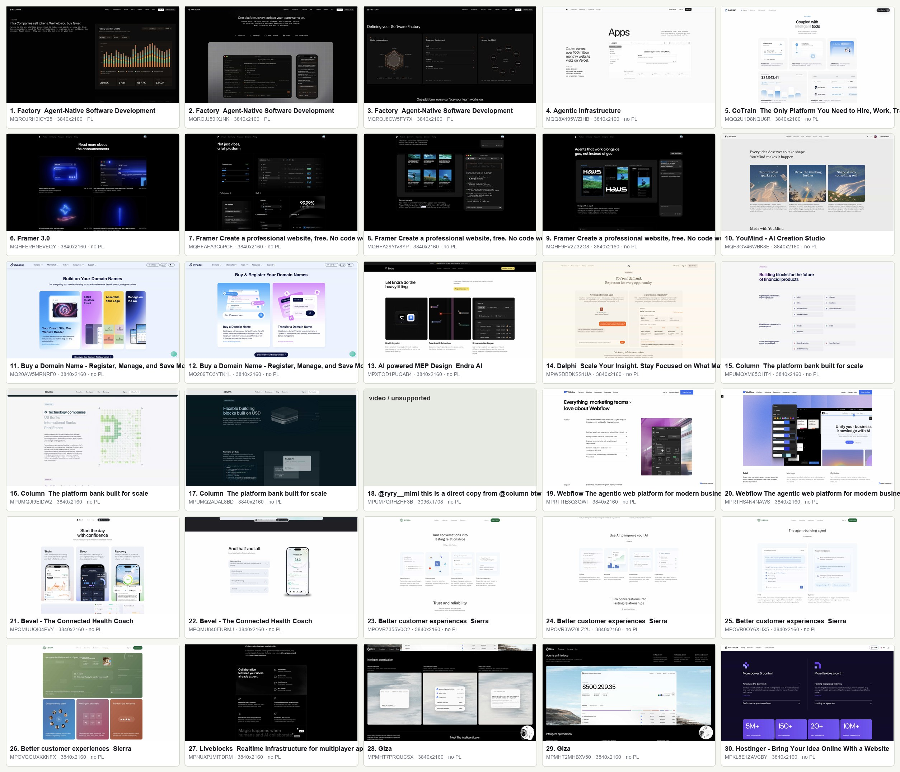

Section_Featured 产品功能亮点
Pattern Discovery Matrix
这页把最近 30 张 Eagle 截图变成可读的研究板。我们先不写回 Eagle，只看真实截图里哪些结构反复出现，再决定哪些模式值得进入正式候选。
Evidence
先看截图可见事实
Intent
判断它想帮用户理解什么
Structure
抽出可复用结构形状
Promotion
出现 3 次以上再作为候选模式
Reading Model
这次研究按三段核心 signature 读图。`layout_variant` 和 `content_style` 都是 modifiers，不负责定义核心模式。
section_type
这里固定为 Features，因为样本来自产品功能亮点 folder。
message_intent
这块 section 想完成的认知任务，例如 overview、deep-dive、proof。
structure_pattern
真正要聚类的复用结构，例如 equal-card-grid。
layout_variant
摆放变体，例如 3-column grid、split、centered、bento。
content_style
素材承载方式，例如 screenshot-led、data-led、mixed-media。
Candidate Clusters
按 `message_intent + structure_pattern` 计数。下面四类已经达到 3 次以上，适合进入下一轮命名讨论。
30-Item Research Board
每张卡片上方是从 contact sheet 裁出来的截图，下方是这一张的模式判断和证据。点击筛选可以只看某个候选 cluster。
Contact Sheet
原始缩略图总览保留在这里，方便回到整体样本感受。
